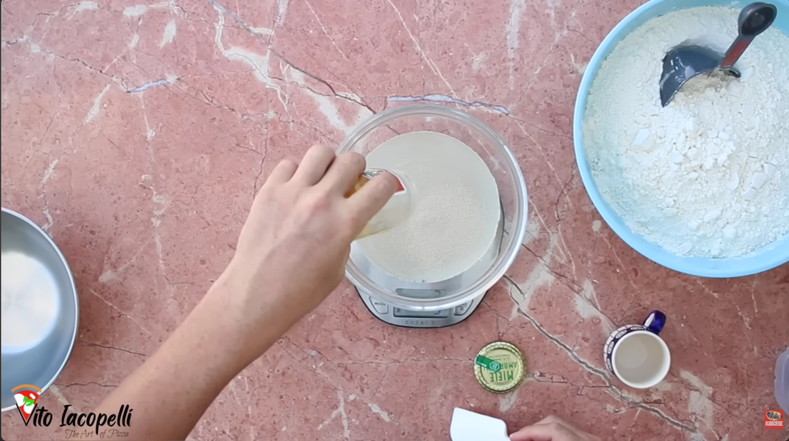

Gramly uses weight-based measurements and percentages
to help bakers measure ingredients accurately,
improving recipe consistency and baking results.
Gramly supports home bakers, baking students,
enthusiasts, and small businesses who want more
accurate and consistent baking results.